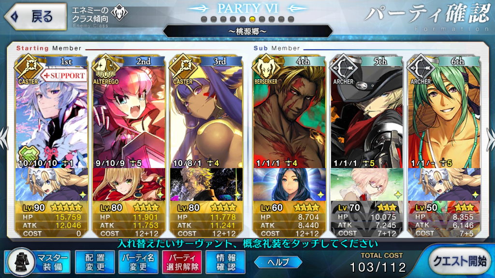

<!DOCTYPE HTML>
<html>
<head><meta name="generator" content="Hexo 3.9.0">
  <meta charset="utf-8">
  
  <title>【FGO】アガルタ 桃源郷 八連双晶集め 周回 | ぷらずま式改</title>
  <meta name="author" content="NPlasma">

  
  <meta name="description" content="NPlasmaの個人メモ">
  

  

  <meta name="viewport" content="width=device-width, initial-scale=1, maximum-scale=1">

  <meta property="og:title" content="【FGO】アガルタ 桃源郷 八連双晶集め 周回">
  <meta property="og:site_name" content="ぷらずま式改">

  
  

  
    <meta property="og:image" content="/img/ogp.png">
  

  <!-- ogp -->
  
    
      <meta name="description" content="この記事ではFGOフリークエストの周回を扱います。編成画像にて最終再臨絵のネタバレがあるのでご注意を">
<meta name="keywords" content="Fate,ゲーム,FGO,Fate&#x2F;GrandOrder,フリクエ周回">
<meta property="og:type" content="article">
<meta property="og:title" content="【FGO】アガルタ 桃源郷 八連双晶集め 周回">
<meta property="og:url" content="http://elleonard.github.io/nplus_doc/2018/05/05/game/fate/fgo/freequest/togenkyo-golem-stone/index.html">
<meta property="og:site_name" content="ぷらずま式改">
<meta property="og:description" content="この記事ではFGOフリークエストの周回を扱います。編成画像にて最終再臨絵のネタバレがあるのでご注意を">
<meta property="og:locale" content="ja">
<meta property="og:image" content="http://elleonard.github.io/nplus_doc/2018/05/05/game/fate/fgo/freequest/togenkyo-golem-stone/togenkyo-golem-stone.png">
<meta property="og:updated_time" content="2019-09-13T04:56:39.381Z">
<meta name="twitter:card" content="summary">
<meta name="twitter:title" content="【FGO】アガルタ 桃源郷 八連双晶集め 周回">
<meta name="twitter:description" content="この記事ではFGOフリークエストの周回を扱います。編成画像にて最終再臨絵のネタバレがあるのでご注意を">
<meta name="twitter:image" content="http://elleonard.github.io/nplus_doc/2018/05/05/game/fate/fgo/freequest/togenkyo-golem-stone/togenkyo-golem-stone.png">
<meta name="twitter:creator" content="@elleonard_f">
    
    <meta name="twitter:image" content="http://elleonard.github.io/nplus_doc/img/ogp.png">
  

  <link rel="alternate" href="/nplus_doc/atom.xml" title="ぷらずま式改" type="application/atom+xml">
  <link rel="stylesheet" href="/nplus_doc/css/style.css" media="screen" type="text/css">
  <!--[if lt IE 9]><script src="//html5shiv.googlecode.com/svn/trunk/html5.js"></script><![endif]-->
  


  <link rel="apple-touch-icon" sizes="180x180" href="/nplus_doc/favicon/apple-touch-icon.png">
  <link rel="icon" type="image/png" sizes="32x32" href="/nplus_doc//favicon/favicon-32x32.png">
  <link rel="icon" type="image/png" sizes="16x16" href="/nplus_doc//favicon/favicon-16x16.png">
  <link rel="manifest" href="/nplus_doc//favicon/site.webmanifest">
  <link rel="mask-icon" href="/nplus_doc//favicon/safari-pinned-tab.svg" color="#5bbad5">
  <meta name="msapplication-TileColor" content="#da532c">
  <meta name="theme-color" content="#ffffff">
</head>
</html>

<body>
  <header id="header" class="inner"><div class="alignleft">
  <h1><a href="/nplus_doc/">ぷらずま式改</a></h1>
  <h2><a href="/nplus_doc/">NPlasma個人メモ</a></h2>
</div>
<nav id="main-nav" class="alignright">
  <ul>
    
      <li><a href="/">Home</a></li>
    
      <li><a href="/nplus_doc/2016/05/29/about/">About</a></li>
    
      <li><a href="https://twitter.com/elleonard_f">Twitter</a></li>
    
      <li><a href="https://github.com/elleonard">GitHub</a></li>
    
      <li><a href="/nplus_doc/2018/02/09/game/fate/fgo/fgo-link/">FGO</a></li>
    
  </ul>
  <div class="clearfix"></div>
</nav>
<div class="clearfix"></div></header>
  <div id="content" class="inner">
    <div id="main-col" class="alignleft"><div id="wrapper"><article class="post">
  
  <div class="post-content">
    <header>
      
        <div class="icon"></div>
        <time datetime="2018-05-05T14:47:39.000Z"><a href="/nplus_doc/2018/05/05/game/fate/fgo/freequest/togenkyo-golem-stone/">2018-05-05</a></time>
      
      
  
    <h1 class="title">【FGO】アガルタ 桃源郷 八連双晶集め 周回</h1>
  

    </header>
    <div class="entry">
      
        <div id="toc" class="toc-article">
          <p class="toc-title">目次</p>
          <ol class="toc"><li class="toc-item toc-level-1"><a class="toc-link" href="#基本方針"><span class="toc-text">基本方針</span></a></li><li class="toc-item toc-level-1"><a class="toc-link" href="#ドロップアイテム"><span class="toc-text">ドロップアイテム</span></a></li><li class="toc-item toc-level-1"><a class="toc-link" href="#エネミー構成"><span class="toc-text">エネミー構成</span></a></li><li class="toc-item toc-level-1"><a class="toc-link" href="#編成"><span class="toc-text">編成</span></a></li><li class="toc-item toc-level-1"><a class="toc-link" href="#周回用キャラ選別"><span class="toc-text">周回用キャラ選別</span></a><ol class="toc-child"><li class="toc-item toc-level-2"><a class="toc-link" href="#アーラシュ-スパルタクス"><span class="toc-text">アーラシュ/スパルタクス</span></a></li><li class="toc-item toc-level-2"><a class="toc-link" href="#NP獲得＋全体宝具"><span class="toc-text">NP獲得＋全体宝具</span></a></li><li class="toc-item toc-level-2"><a class="toc-link" href="#高威力単体宝具持ち"><span class="toc-text">高威力単体宝具持ち</span></a><ol class="toc-child"><li class="toc-item toc-level-3"><a class="toc-link" href="#ケツァル・コアトル"><span class="toc-text">ケツァル・コアトル</span></a></li><li class="toc-item toc-level-3"><a class="toc-link" href="#水着マルタ"><span class="toc-text">水着マルタ</span></a></li><li class="toc-item toc-level-3"><a class="toc-link" href="#ベディヴィエール"><span class="toc-text">ベディヴィエール</span></a></li><li class="toc-item toc-level-3"><a class="toc-link" href="#坂田金時（狂）"><span class="toc-text">坂田金時（狂）</span></a></li><li class="toc-item toc-level-3"><a class="toc-link" href="#三蔵"><span class="toc-text">三蔵</span></a></li><li class="toc-item toc-level-3"><a class="toc-link" href="#メカエリチャン"><span class="toc-text">メカエリチャン</span></a></li><li class="toc-item toc-level-3"><a class="toc-link" href="#坂田金時（騎）"><span class="toc-text">坂田金時（騎）</span></a></li><li class="toc-item toc-level-3"><a class="toc-link" href="#ロビンフッド"><span class="toc-text">ロビンフッド</span></a></li></ol></li></ol></li></ol>
        </div>
        <p>この記事ではFGOフリークエストの周回を扱います。<br>編成画像にて最終再臨絵のネタバレがあるのでご注意を</p>
<a id="more"></a>

<h1 id="基本方針"><a href="#基本方針" class="headerlink" title="基本方針"></a>基本方針</h1><ul>
<li>3T周回する</li>
</ul>
<h1 id="ドロップアイテム"><a href="#ドロップアイテム" class="headerlink" title="ドロップアイテム"></a>ドロップアイテム</h1><ul>
<li>八連双晶</li>
</ul>
<h1 id="エネミー構成"><a href="#エネミー構成" class="headerlink" title="エネミー構成"></a>エネミー構成</h1><ul>
<li>ゴーレム系のみ</li>
<li>3wは高HP（28万程度）のゴーレム単騎</li>
</ul>
<h1 id="編成"><a href="#編成" class="headerlink" title="編成"></a>編成</h1><p></p>
<p>カレスコニトクリスで1～2wをすっ飛ばし、3wは英雄作成込みのメカエリで吹き飛ばす<br>画像では凸カレスコだが、マーリンの夢幻のカリスマがあるため未凸でも可</p>
<p>凸バトルオリンピアは他のNP60以上礼装で代用できるか？</p>
<p>2wで星を出して3wをクリティカルで対処する方法もなくはないが、カード運に大きく左右され安定しない</p>
<p>マスター礼装を極地に拘らなければ、火力役の幅は広がる</p>
<h1 id="周回用キャラ選別"><a href="#周回用キャラ選別" class="headerlink" title="周回用キャラ選別"></a>周回用キャラ選別</h1><h2 id="アーラシュ-スパルタクス"><a href="#アーラシュ-スパルタクス" class="headerlink" title="アーラシュ/スパルタクス"></a>アーラシュ/スパルタクス</h2><p>いつもの</p>
<h2 id="NP獲得＋全体宝具"><a href="#NP獲得＋全体宝具" class="headerlink" title="NP獲得＋全体宝具"></a>NP獲得＋全体宝具</h2><p>バーサーカー染めの編成のため、比較的選択の幅は広い<br>低レアならメドゥーサ、アヴィケブロン、パラケルスス、シェイクスピア、配布ならジャンヌ・ダルク・オルタ・サンタ・リリィ</p>
<p>特にNP+20と合わせて即座に宝具を打てるアヴィケブロン、パラケルススは優秀と思われる（筆者は2基とも育成しきれておらず、試せていない）<br>凸カレスコとNP20配布系をあわせて宝具を2連打できるので、1～2wを任せられるかもしれない</p>
<p>ニトクリスであれば未凸カレスコでも高速神言をLv8以上にすることで1～2wをすっとばせる</p>
<h2 id="高威力単体宝具持ち"><a href="#高威力単体宝具持ち" class="headerlink" title="高威力単体宝具持ち"></a>高威力単体宝具持ち</h2><p>3w突破のため、単体に高いダメージを叩き出せるサーヴァントを採用したい<br>礼装によるサポートを考え、バスター宝具であれば初期NP50～60程度＋マーリンでNP100を達成できると良いだろう</p>
<h3 id="ケツァル・コアトル"><a href="#ケツァル・コアトル" class="headerlink" title="ケツァル・コアトル"></a>ケツァル・コアトル</h3><p>カリスマによる全体バフがあり、1～2wの火力補助もこなせる<br>自由なる闘争をLv10にしておけばNPを30獲得できるため、初期NP50の礼装でマーリンと合わせてNP100を達成できる</p>
<p>バスター宝具であり、英雄作成とも噛み合う</p>
<p>ただし、☆5サーヴァントのため入手しづらく、育成にも手間がかかる</p>
<h3 id="水着マルタ"><a href="#水着マルタ" class="headerlink" title="水着マルタ"></a>水着マルタ</h3><p>水辺の聖女は最大レベルでNP+30<br>特攻が入るわけでもなく、水辺でもないので火力はそこまで伸びないが、宝具レベルが上がっていれば採用の余地あり</p>
<p>礼装はエアリアルドライブやゴールデン相撲岩場所、防御デバフの効果アップを見込んで魔性菩薩でも良い</p>
<h3 id="ベディヴィエール"><a href="#ベディヴィエール" class="headerlink" title="ベディヴィエール"></a>ベディヴィエール</h3><p>☆3セイバー<br>セイバーピックアップやCBCで宝具レベルを上げてある場合は採用が検討できる</p>
<p>入手機会こそ少ないものの、軍略以外にレベルを上げておくべきスキルがなく、低レアのため育成コストが軽い<br>しっかり銀フォウを入れておかないとLv70程度では撃ち漏らしが発生する<br>ただし、相手はバーサーカーなので追撃すればどうとでもなる</p>
<p>礼装は、宝具を放つ前に入るバスターアップが強化されるので魔性菩薩が良いだろうか</p>
<h3 id="坂田金時（狂）"><a href="#坂田金時（狂）" class="headerlink" title="坂田金時（狂）"></a>坂田金時（狂）</h3><p>自力でNPを+50できるバーサーカー<br>怪力による自前バフもあり強力だが、☆5のため入手しづらく、育成に手間がかかる</p>
<h3 id="三蔵"><a href="#三蔵" class="headerlink" title="三蔵"></a>三蔵</h3><p>自前でNPを+80できるキャスター<br>キャスター故に火力はやや低いが、NPを+80できるため、黒聖杯とマーリンをあわせての高いダメージが期待できる<br>NP獲得スキルに宝具威力アップのおまけもついている</p>
<p>同様にNPを大量に獲得できるオケアノスのキャスターやメディアでは火力が流石に足りない</p>
<h3 id="メカエリチャン"><a href="#メカエリチャン" class="headerlink" title="メカエリチャン"></a>メカエリチャン</h3><p>アルターエゴのバスター担当<br>オーバーロードで獲得できるNPは20のみなので、マーリンと合わせて100にするためには初期NP60以上必要になる<br>火力も伸ばそうとすると凸バトルオリンピアが最適だが、なければ他の礼装でも代用できる？</p>
<p>配布サーヴァント故、イベントにしっかり参加していれば宝具レベルが上がっている</p>
<h3 id="坂田金時（騎）"><a href="#坂田金時（騎）" class="headerlink" title="坂田金時（騎）"></a>坂田金時（騎）</h3><p>自前でNPを+50できるライダー<br>スキルや宝具にクイックアップがあり、OCで伸びるため魔性菩薩で火力を伸ばせる</p>
<p>クイック宝具のため、英雄作成とは噛み合わない<br>マーリンではなく優秀なクイックバフ持ち（スカサハやアタランテ）と組ませるのもアリ</p>
<p>配布サーヴァントのため、イベントにしっかり参加していれば宝具レベルが上がっている</p>
<h3 id="ロビンフッド"><a href="#ロビンフッド" class="headerlink" title="ロビンフッド"></a>ロビンフッド</h3><p>ダイブ・トゥ・ブルーやニュービギニング、あるいは魔性菩薩を持たせ、マーリンではなく孔明を用いる<br>孔明の宝具からチェインすれば確実</p>

      
    </div>
    
    <footer>
        <div class="alignright">
            <a href="https://twitter.com/share?ref_src=twsrc%5Etfw" class="twitter-share-button" data-text="【FGO】アガルタ 桃源郷 八連双晶集め 周回 | ぷらずま式改" data-url="http://elleonard.github.io/nplus_doc/2018/05/05/game/fate/fgo/freequest/togenkyo-golem-stone/" data-via="elleonard_f" data-show-count="false">Tweet</a><script async src="https://platform.twitter.com/widgets.js" charset="utf-8"></script>
        </div>
        
  
  <div class="categories">
    <a href="/nplus_doc/categories/FGO/">FGO</a>
  </div>

        
  
  <div class="tags">
    <a href="/nplus_doc/tags/Fate/">Fate</a>, <a href="/nplus_doc/tags/ゲーム/">ゲーム</a>, <a href="/nplus_doc/tags/FGO/">FGO</a>, <a href="/nplus_doc/tags/Fate-GrandOrder/">Fate/GrandOrder</a>, <a href="/nplus_doc/tags/フリクエ周回/">フリクエ周回</a>
  </div>

        
          <div class="article-prev">
              <a href="/nplus_doc/2018/05/05/game/fate/fgo/freequest/observatory-shell/">【FGO】バビロニア 観測所 追憶の貝殻集め 周回 <span class="prev-arrow"/></a>
            </div>
        
        
          <div class="article-next">
            <a href="/nplus_doc/2018/04/27/game/neptunia/neptunia-rebirth2/">【ゲーム感想】超次次元ゲイム ネプテューヌRe;Birth2 SISTERS GENERATION <span class="next-arrow"/></a>
          </div>
        
        <!-- partial('post/share') -->
      <div class="clearfix"></div>
    </footer>
  </div>
</article>


</div></div>
    <aside id="sidebar" class="alignright">
  <div class="search">
  <form action="//google.com/search" method="get" accept-charset="utf-8">
    <input type="search" name="q" results="0" placeholder="検索">
    <input type="hidden" name="q" value="site:elleonard.github.io/nplus_doc">
  </form>
</div>

  
<div class="widget tag">
  <h3 class="title">カテゴリ</h3>
  <ul class="entry">
  
    <li><a href="/nplus_doc/categories/FGO/">FGO</a><small>47</small></li>
  
    <li><a href="/nplus_doc/categories/niconico/">niconico</a><small>3</small></li>
  
    <li><a href="/nplus_doc/categories/アニメ感想/">アニメ感想</a><small>9</small></li>
  
    <li><a href="/nplus_doc/categories/ゲーム/">ゲーム</a><small>47</small></li>
  
    <li><a href="/nplus_doc/categories/ゲーム/ゲームレビュー/">ゲームレビュー</a><small>36</small></li>
  
    <li><a href="/nplus_doc/categories/ゲーム制作/">ゲーム制作</a><small>7</small></li>
  
    <li><a href="/nplus_doc/categories/遊戯王ブロンティーズ/デッキレシピ/">デッキレシピ</a><small>4</small></li>
  
    <li><a href="/nplus_doc/categories/小説/">小説</a><small>4</small></li>
  
    <li><a href="/nplus_doc/categories/情報技術/">情報技術</a><small>11</small></li>
  
    <li><a href="/nplus_doc/categories/漫画/">漫画</a><small>2</small></li>
  
    <li><a href="/nplus_doc/categories/百合/">百合</a><small>6</small></li>
  
    <li><a href="/nplus_doc/categories/艦これ/">艦これ</a><small>76</small></li>
  
    <li><a href="/nplus_doc/categories/遊戯王ブロンティーズ/">遊戯王ブロンティーズ</a><small>4</small></li>
  
    <li><a href="/nplus_doc/categories/雑記/">雑記</a><small>4</small></li>
  
  </ul>
</div>


  
<div class="widget tag">
  <h3 class="title">最近の投稿</h3>
  <ul class="entry">
    
      <li>
        <a href="/nplus_doc/2020/02/21/novel/dear-all-of-you/">【ラノベ感想】じんるいのみなさまへ -わたしたちの場所-</a>
      </li>
    
      <li>
        <a href="/nplus_doc/2020/02/20/game/dear-all-of-you/">【ゲーム感想】じんるいのみなさまへ</a>
      </li>
    
      <li>
        <a href="/nplus_doc/2020/02/04/game/crystar/">【ゲーム感想】CRYSTAR -クライスタ-</a>
      </li>
    
      <li>
        <a href="/nplus_doc/2020/01/21/game/azurlane-crosswave/">【ゲーム感想】アズールレーン クロスウェーブ</a>
      </li>
    
      <li>
        <a href="/nplus_doc/2020/01/19/game/bloodborne/">【ゲーム感想】Bloodborne</a>
      </li>
    
  </ul>
</div>


  
<div class="widget tag">
  <h3 class="title">Link</h3>
  <ul class="entry">
    
      <li>
        <a href="https://www.nicovideo.jp/">niconico</a>
      </li>
    
      <li>
        <a href="http://lovingtheflags1986.blog96.fc2.com/">国旗と酒が待ち遠しいドリル日記</a>
      </li>
    
  </ul>
</div>


</aside>
    
    <div class="clearfix"></div>
  </div>
  <footer id="footer" class="inner"><div class="alignleft">
  <p>
  
  &copy; 2020 NPlasma
  
  All rights reserved.</p>
  <p>Powered by <a href="http://hexo.io/" target="_blank">Hexo</a></p>
</div>
<div class="clearfix"></div>
</footer>
  <script src="/nplus_doc/js/jquery.imagesloaded.min.js"></script>
<script src="/nplus_doc/js/gallery.js"></script>


<link rel="stylesheet" href="/nplus_doc/fancybox/jquery.fancybox.css" media="screen" type="text/css">
<script src="/nplus_doc/fancybox/jquery.fancybox.pack.js"></script>
<script type="text/javascript">
(function($){
  $('.fancybox').fancybox();
})(jQuery);
</script>


<div id='bg'></div>
</body>
</html>
